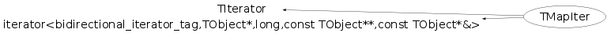

class TMapIter: public TIterator, public iterator<bidirectional_iterator_tag,TObject*,long,const TObject**,const TObject*&>
Function Members (Methods)
public:
| TMapIter(const TMapIter& iter) | |
| TMapIter(const TMap* map, Bool_t dir = kIterForward) | |
| virtual | ~TMapIter() |
| static TClass* | Class() |
| virtual const TCollection* | GetCollection() const |
| virtual Option_t* | TIterator::GetOption() const |
| virtual TClass* | IsA() const |
| virtual TObject* | Next() |
| virtual bool | operator!=(const TIterator& aIter) const |
| bool | operator!=(const TMapIter& aIter) const |
| TObject* | TIterator::operator()() |
| virtual TObject* | operator*() const |
| virtual TIterator& | operator=(const TIterator& rhs) |
| TMapIter& | operator=(const TMapIter& rhs) |
| virtual void | Reset() |
| virtual void | ShowMembers(TMemberInspector& insp) |
| virtual void | Streamer(TBuffer& b) |
| void | StreamerNVirtual(TBuffer& b) |
private:
| TMapIter() |
Data Members
private:
| THashTableIter* | fCursor | current position in map |
| Bool_t | fDirection | iteration direction |
| const TMap* | fMap | map being iterated |
Class Charts
{kind=link}
{kind=link}
{kind=link}
{kind=link}

Function documentation
TMapIter(const TMap* map, Bool_t dir = kIterForward)
Create a map iterator. Use dir to specify the desired iteration direction.